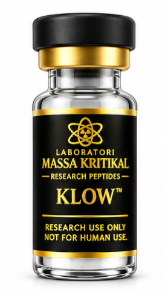
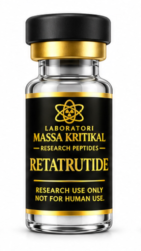
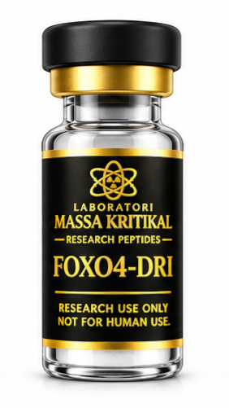

01 / BIOLOGYCellular Signaling
Investigating how peptide molecules interact with receptors and signaling pathways involved in normal biological functions.
Please confirm all three statements before entering Laboratori Massa Kritikal.
Exploring the science of peptides and their role in biological systems. We believe meaningful discovery begins with rigorous investigation, transparent information, and respect for the evidence.
Peptides are chains of amino acids that participate in many biological processes. Researchers study their structures, interactions, and possible applications to expand scientific understanding.
Peptide research is an evolving field spanning molecular biology, metabolism, and other areas of biomedical investigation. Some peptide-based medicines have established clinical uses, while other compounds remain investigational.
A biological mechanism or promising early result does not establish that a compound is safe, effective, or beneficial for people. The quality of the evidence, the specific substance, and the stage of research all matter.
Our goal is to present scientific information responsibly, distinguish research findings from hypotheses, and avoid overstating what current evidence can demonstrate.
Product identity, composition, documentation, and regulatory status should be evaluated independently for every research material. No listing should be interpreted as a recommendation for personal use or as evidence of a medical benefit.
Explore the Product page through individual listings and representative product imagery. Product availability and configurations are provided on the Product page.

Listed configuration: 80 mg bottle.

Listed configurations: 10 mg, 20 mg, and 30 mg bottles.

Listed configuration: 10 mg bottle.
The information presented on this website is provided for scientific and educational information purposes only. It is not medical advice and is not intended to diagnose, treat, cure, or prevent any disease.
Scientific information discussed on this website may derive from in vitro laboratory studies, animal research, observational studies, or human clinical trials. These forms of evidence have different limitations and are not interchangeable. Findings observed in laboratory or animal studies do not establish safety or effectiveness in humans, and preliminary research should not be interpreted as proof of a clinical benefit.
Compounds discussed or listed on this website may be investigational and may not be approved by the U.S. Food and Drug Administration (FDA) or other applicable regulatory authorities for any medical indication. The inclusion of a compound in scientific literature, a product catalog, or a research summary does not establish that it is safe, effective, approved, or appropriate for human or veterinary use. No claim of therapeutic benefit should be inferred unless adequately supported and legally authorized for the specific product and intended use.
Product descriptions, stated specifications, and available documentation should be evaluated on an individual product basis. Listing a compound or describing published research does not independently verify its identity, purity, potency, sterility, stability, or suitability for any particular application. No product should be assumed to meet a particular quality standard without appropriate supporting documentation.
Research materials are not represented as medicines for personal use. Do not use research-only materials for self-treatment or veterinary treatment. Decisions concerning diagnosis or treatment should be made with a qualified healthcare professional using appropriately authorized products and evidence-based medical guidance.
A research-use designation does not exempt any product, seller, manufacturer, distributor, or marketing claim from applicable federal, state, or local laws and regulations. The lawful status of a compound or product depends on its specific identity, formulation, intended use, labeling, marketing, distribution, and other relevant circumstances. Product eligibility and regulatory requirements must be assessed individually.
Laboratori Massa Kritikal encourages critical thinking, transparent communication, and responsible engagement with scientific research. We distinguish established evidence from preliminary findings and acknowledge that scientific understanding evolves. Website content is provided for general informational purposes and should not be relied upon as a substitute for independent verification of scientific findings, product documentation, or applicable legal requirements.
By accessing this website, you acknowledge that scientific information has limitations and that you are responsible for evaluating the relevance and lawful use of any information or materials in accordance with applicable requirements.